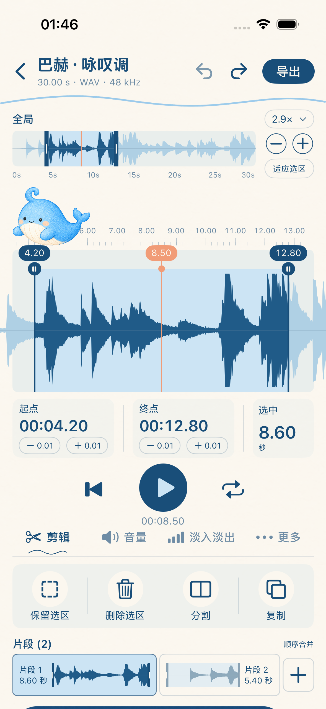
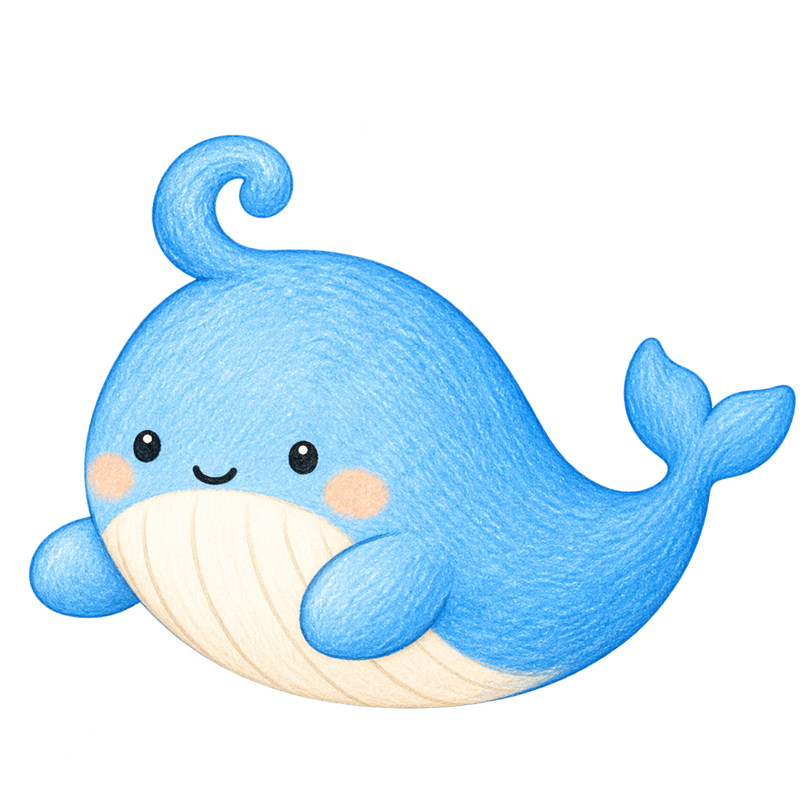
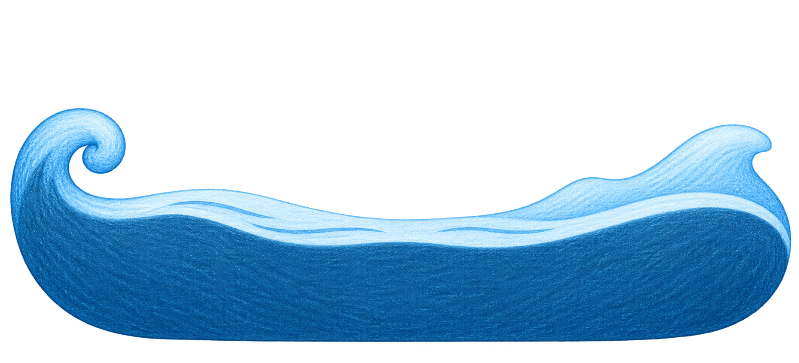

小小鲸鱼，认真对待每一段声音。
录下灵感，剪出精彩。把精细的音频工具，装进轻松好用的小小工作台。


WAVEWHALE / 声音工作台
放大波形，以 0.01 秒步进微调起止点。
裁剪、分割、合并，搭配音量、峰值归一化与淡入淡出。
随时录音、从视频提取音频，以 M4A 或 WAV 导出。
音频在设备本地处理，无需应用账号，没有广告，也没有第三方分析 SDK。

可同时体验一个个人项目，不设体验期限，首次成功导出后结束。月付、年付与终身会员解锁相同工具。